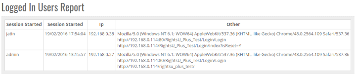


	<section>
		<article>
			<h2>Logged in Users<span></span></h2>
			<div>
				<p></p>

				<p>This report focuses on showing records of users who are currently logged in to the system.

				<div class="triangle-border top">				
					
				</div>

				As can be seen in above image, system displays user name, session start time, IP and other info like browser name and version etc.</p>
				
			</div>
		</article>
	</section>